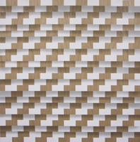
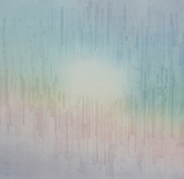
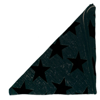

past exhibition | ||
Forth Estate: New Editions | ||
|  |  |  |
| Suzanne Song Reset 2009 edition of 25 two color silkscreen on cherry wood veneer 19 x 18 1/2 inches |
Ryan Wallace Observation variable edition of 10 2010 lithograph and hand coloring on Chartham Translucents Pearlized Platinum 112 gsm paper 19 5/8 X 28 1/2 inches |
Phil Sanders Black Flag Edition 25 2008 20 x 16" 5 color silkscreen printed at Axelle Editions printed by the artist |
|
| ||
|
The Wild Project is pleased to present Forth Estate: New Editions, an exhibition of recent prints from Forth Estate. Forth Estate was founded in 2005 by Luther Davis and Glen Baldridge in the interest of producing editioned works by emerging artists using both traditional and technologically innovative approaches to printmaking. The Wild Project will be presenting a selection of newly published works from 2010. Artists included in the show are: Glen Baldridge Forth Estate prints are in the collections of the New York Public Library, Museum of Modern Art, Whitney Museum of American Art, Newark Public Library, and the Jundt Art Museum. | ||
exhibition archive |
|||
| 2016 | 2015 | 2014 | 2013 |
| 2011 | 2010 | 2009 | 2008 |